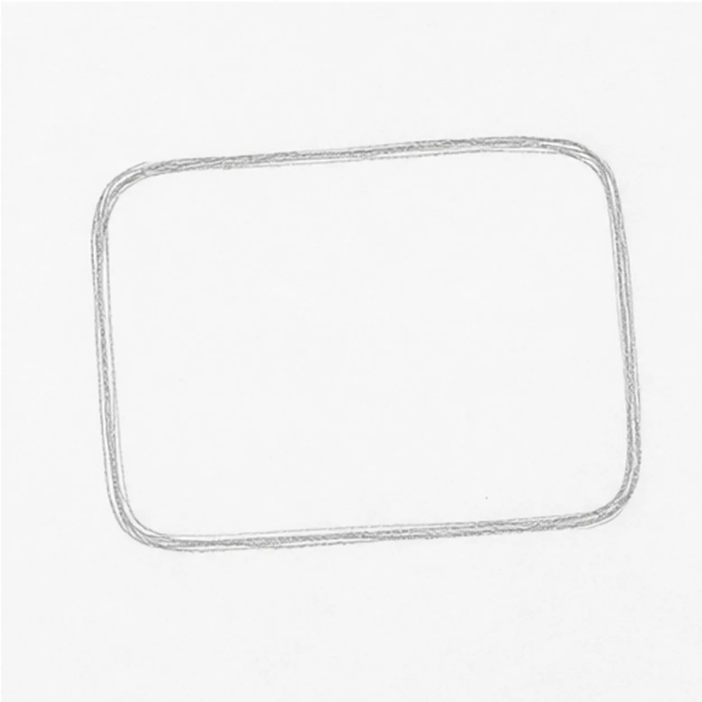
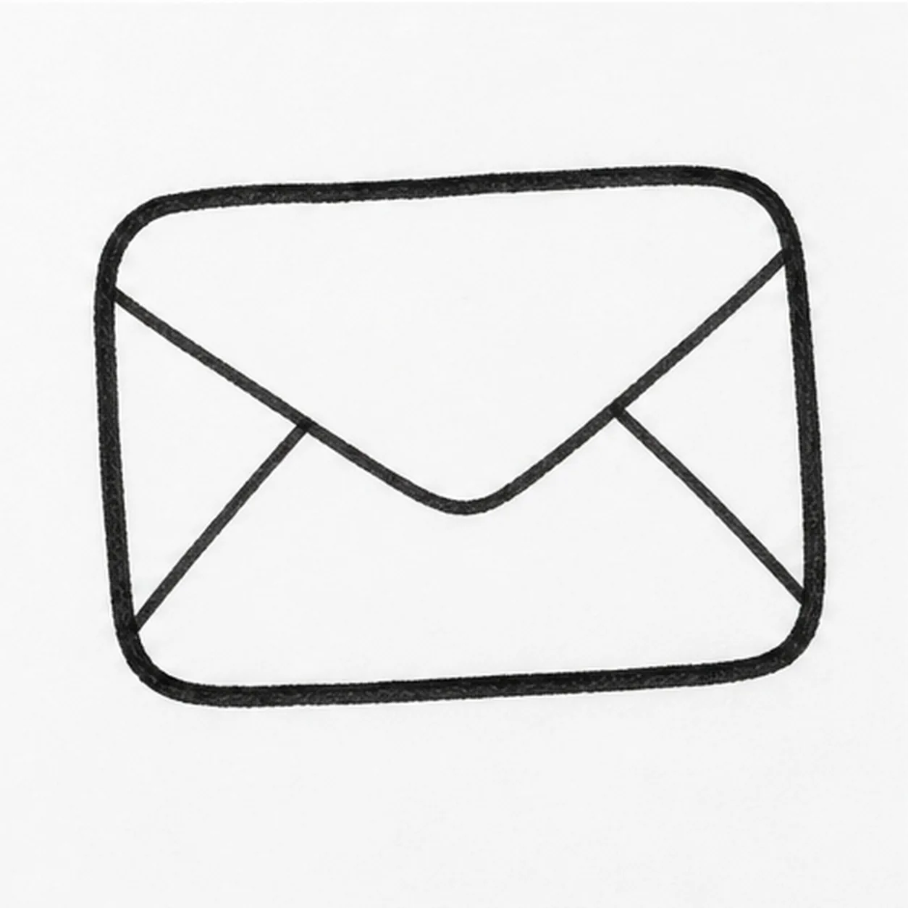
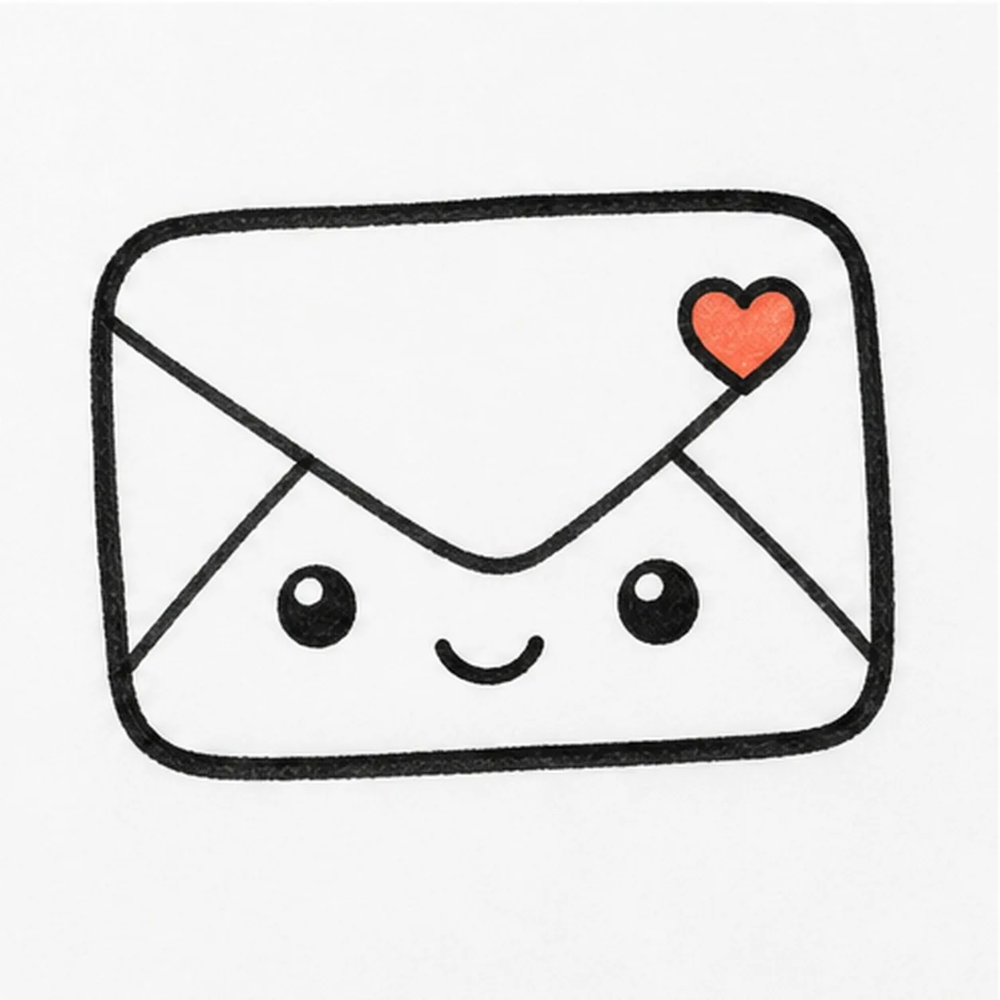
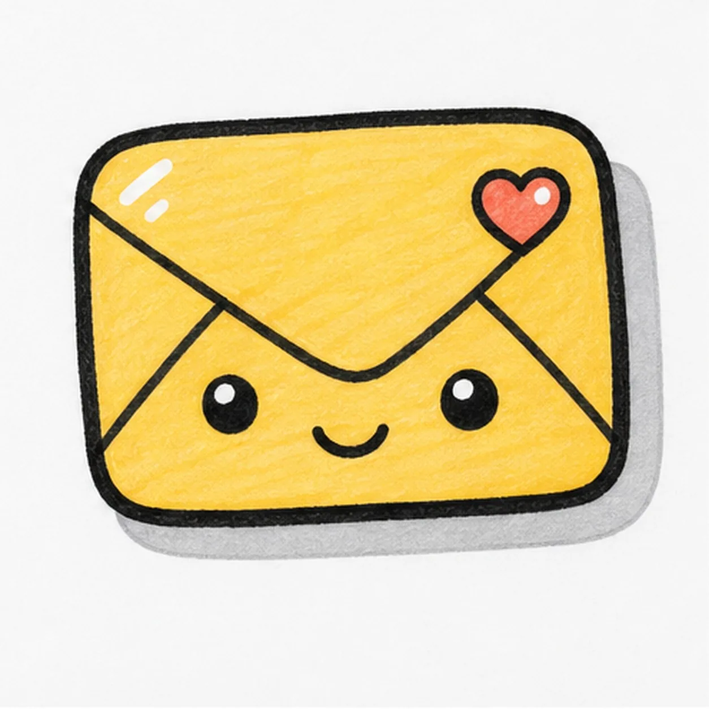

Felt-tip marker mode
Let's doodle a smiling envelope sticker
Treat this as one playful practice round: sketch the idea loosely, simplify the shapes, then commit with confident marker outlines and bright fills.
-
01

Block the envelope
Draw a wide rounded rectangle for the envelope sticker body.
Doodle tip: Round the corners more than a real envelope. Sticker shapes look friendlier when the edges are soft.
-
02

Fold the flap
Add the diagonal flap lines, bring them to a soft point near the middle, and thicken the outer edge with black marker.
Doodle tip: Let the flap point sit a little below center so the face has room under it.
-
03

Add face and stamp
Draw two simple eyes, a small smile, and a tiny coral heart stamp in the upper corner.
Doodle tip: Keep the stamp small. It should be a cute accent, not a second main subject.
-
04
Set the sticker shadow
Add a gray offset shadow behind the lower and right edges of the envelope.
Doodle tip: Follow the same rounded rectangle shape so the shadow feels attached to the sticker.
-
05

Fill the happy mail
Fill the envelope with warm yellow marker and add small white shine marks on the existing envelope and stamp shapes.
Doodle tip: Color around the eyes and smile carefully so the expression stays crisp.
-
06

Seal the sticker finish
Retrace the existing outline, even the marker fill, and clarify the face, flap, heart stamp, shadow, and shine marks already in place.
Doodle tip: Skip extra letters or postage marks. A simple face plus one small stamp shape is enough, whether yours is a heart, star, dot, or tiny flower.